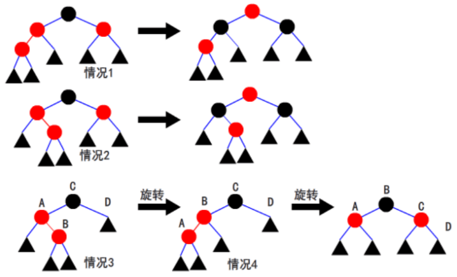

维护一棵初始为空的红黑树，进行 $n$ 次操作。
对于重复的整数，我们认为插入时间晚的一个更小。
操作有两类：
$op=1$：在红黑树上插入一个整数 $x$；
$op=2$：给出 $x$，询问从 $1$ 到 $x$ 的整数中等概率选取一个插入到红黑树上，造成的旋转次数的期望值，方便起见，你只要输出 $期望值 \times x$，（可以证明这是一个整数）。
第一行一个整数 $n$；
接下来 $n$ 行，每行两个由空格分隔的整数 $op,x$，表示一次操作。
对每个 $op=2$ 的操作，输出一行，包含一个整数，表示答案。
10 2 5 1 3 1 4 2 3 2 4 2 5 1 4 2 3 2 4 2 5
0 0 2 3 0 0 0
$1≤n≤200000$
$1≤op≤2$
$1≤x≤100000000$
红黑树是一棵二叉查找树，每个点有颜色（红/黑）。
每次执行插入操作时，新插入的点为红色，操作方式和普通二叉查找树相同。
如果出现两个红色的点互为父子，如图进行调整（操作是左右对称的，对称操作在图中不再重复列出；黑色三角形表示空或以黑色点为根的子树），调整可能需要连续进行多次。
调整完毕后，把根设为黑色。

 Comet OJ
Comet OJ